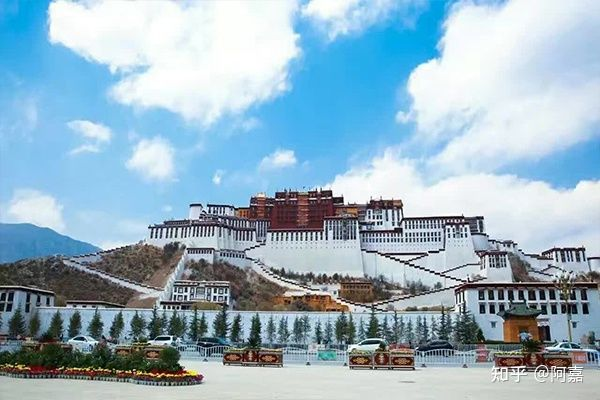

.png)
一个人的拉萨行——西藏拉萨旅游攻略
拉萨，又称为——日光城、逻些，风光秀丽、历史悠久、风俗民情独特、宗教色彩浓厚。拉萨是我们大多数人开始西藏之行的第一站。 而我想说，拉萨是目的地，不是中转站！ 拉萨有世界闻名的景观，有川菜、藏式风味、尼泊尔风味、印度风味的美食。拉萨人民信仰很高，在这里能感受到慢节奏的生活， 拉萨适合驻足逗留徘徊，而不是匆匆一瞥著名景点，然后赶往下一站。
拉萨旅游攻略——衣食住行篇
1、穿衣：西藏地处于高原地区，海拔高，拉萨和林芝海拔相对要低一些，再加上阳光直射，紫外线非常强烈，早晚温差大，一定要做好充足的准备。
3-5月（春季）；这个季节正直初春，气温偏低，可带一些保暖的衣服，鞋子可准备旅游户外鞋，方便行走。
6-8月（夏季）：运动休闲衣裤皆可，
里面穿的可准备长袖体恤或衬衣，方便增减衣物。
9-11月（秋季）：建议准备厚实点的衣裤，冲锋衣可阻挡风雨，里面的衣服备保暖的毛衣。
12-次年2月（冬季）：冬季要准备羽绒服，毛衣等厚的衣服。 除此之外，其他的还要准备墨镜，帽子这些装备，夏天还需要带防晒衣防晒霜这些，
用来阻挡紫外线和风沙，以免晒伤自己。还有就是如果要去珠峰，阿里等高海拔地区，无论几月一定要备好羽绒服，毛衣这些衣物。
2、美食：西藏当地传统饮食主要是藏餐，随着西藏经济的发展，四川风味的餐馆也随之开了起来。到了西藏当然要去品尝正宗的藏族美食，
下面为你介绍几个好吃的地方。
拉萨厨房：特色菜是酸奶，地处大昭寺附近，主要是尼泊尔菜，味道还是挺不错的。
玛吉阿米餐厅：主要是提供藏式，尼泊尔和印度风味的食物，位置是在拉萨八廓街的东南角。
娜玛瑟德餐厅：主要经营藏餐、印度餐和尼泊尔餐，属于大众口味，生意非常好，它坐落于大昭寺旁的宇拓路“拉萨电影城”楼上。
刚吉餐厅：这家餐厅提供比较正宗的藏餐和印度餐，它位于大昭寺广场旁的一家小店，门店不大，但非常适合喝茶休息。
冈拉梅朵餐厅:也是供藏餐，也有其他菜系，在城关区北京东路127号(亚宾馆斜对面)，他们家环境很好。
拉萨还有许多好吃好玩的地方：光明港琼甜茶馆、丛白茶饮、牦牛酸奶坊、喜鹊阁厨房、天堂时光书店、大冰的小屋。很多有趣的地方就不一一介绍，
手机导航可以找到。
3、住宿：若是旅游经费有限，可以选择住在青年旅店和家庭民宿，价格在30~120之间，青年旅舍很多年轻的驴友居住，住在
一起可以了解到很多旅行趣事。想住的好一点像三星级酒店，一晚大概180~300元。
4、出行：进藏的交通方式普遍是飞机和火车。火车进藏价格
实惠，耗时比较长；乘飞机进藏快捷，费用相对来说比较高。时间充足可以尝试火车进藏（建议从西宁坐火车进藏，时间最短），经济条件充足可以
选择飞机进藏。 拉萨市内的交通还是非常方便的，大部分景点坐公交和出租车都可到达，费用也不是很贵，酒店住得近，有些景点走路便可到达。
出了拉萨地区，其他地区就需要租车或包车前往，比较省钱的方式是结伴游。有需要的可以联系阿杰~
拉萨旅游攻略——景点篇
旺季去拉萨旅游，景点门票价格没有任何折扣，淡季有些景点门票价格减半。由于拉萨市内大部分是人文寺庙景观，无论淡季旺季价格相差不大
，冬游政策期间寺庙价格也没有减少。
拉萨的旅游景点有布达拉宫，八廓街、大昭寺、小昭寺、罗布林卡、哲蚌寺、甘丹寺、色拉寺、扎基寺、宗教禄康公园、清政府驻藏大臣衙门、
纳木错等等。
布达拉宫：坐落于中国西藏自治区首府拉萨市区西北玛布日山上，是世界上海海拔最高，集宫殿、城堡和寺院于一体的宏伟建筑，也是西藏庞大、
完整的古代宫堡建筑群。
八廓街：又名八角街，位于拉萨市老城区大昭寺周围，是拉萨人民的转经道和商业中心，大到家用电器，小到生活器皿，
应有尽有，比较完整地保存了古城的传统面貌和居住方式。 这里是拉萨城内最热闹非凡的街道，在这里你会看到很多藏式朴素的藏民，各种具有
藏式风格的建筑，各类藏式纪念品。
大昭寺：在拉萨人民心中大昭寺的地位不亚于布达拉宫，但对于游客来讲布达拉宫更为出名。俗话说：“先有
大昭寺，后有 拉萨 城”，大昭寺跟拉萨城的历史并行，已有1300多年的历史，是藏地最富盛名的一座庙宇，原为松赞干布为尺尊公主修建，最为
辉煌的地方在于殿内供奉着释迦牟尼12岁等身像。 再来说说西藏拉萨周边的景点吧！
拉萨周边的旅游胜地有林芝、日喀则、阿里、山南等，风景也
是十分著名，值得一游。 林芝景点有巴松措、然乌湖、鲁朗林海、雅鲁藏布大峡谷、南迦巴瓦峰等。4月份去林芝参观可以观赏到漫山的桃花，十分
壮观，还能遇到一年一度的桃花节；10月和11月的林芝像春天一样，天气晴朗，温度也适宜，景色也不错，很适合旅游。其他时候不建议去，遇上的
不是雨季就是冬季，容易出现泥石流等情况。
日喀则的景点有扎什伦布寺、珠穆朗玛峰、卡若拉冰川，普姆雍措等。日喀则地区一带气候温和，日光
充足，什么时候去都比较合适，如果要去珠峰10月到次年4月属于严寒，不适合旅游，7,8月是雨季，也无法见到珠穆朗玛峰。
阿里地区的有神山冈仁波齐，神湖玛旁雍错，鬼湖拉昂错，扎达土林，古格王朝等。阿里位于西藏西部，海拔比较高，再加上自然条件也恶劣，权利旅游最好是每年7月到10月去，这个时候还会有转山的活动。
山南地区有著名的西藏圣湖——羊卓雍错，时间有限的游客选择拉萨周边景点游玩，羊卓雍错就是其一。
拉萨旅游攻略——注意事项篇
1.拉萨海拔3650米，对于初次去拉萨，第一反应是高原反应有什么症状及预防，不用担心，去拉萨之前一定要做一个全面的健康体检，若是发现自己心、
肺、脑、肝、肾有明显的病变，以及严重贫血或高血压病人，一定不能盲目进藏。另外心脏病、高血压、哮喘病人群，以及进藏之前感冒的人群也不适合
，一定要等到感冒痊愈了之后在前往。
2.进入西藏的游客都会有或多或少的高原反应，因此在进藏之前可不要锻炼自己的身体，可提前服用预防高反的药物。
3.若是跟团旅游切记不要私自脱离队伍，晚上不要在外面闲逛，以免遇到任何意外。
4.因为西藏地理位置特殊，加上容易高反，游客初入藏，千万不要洗澡，以免着凉感冒。
5.西藏地区日照强烈，气候十分干燥，防晒霜，防晒衣，墨镜，帽子，润唇膏等装备必不可少，另外也可以带一些保湿的护肤品，
保持自己脸上的水分充足。
6.去西藏旅游大部分时间都是在车上度过，所以游客要备好零食，这样不至于饿肚子。
7.西藏地区民风淳朴，藏族人民延续他们的一些风俗习惯，去西藏旅行的游客一定要尊重当地的习俗，要适当的了解当地的禁忌，
可以避免发生冲突。例如，参观寺庙的时候不要随意触摸佛像；不要摸小朋友的头等。
拉萨是一座需要慢慢探索的城市，拉萨的面积很小，但仔细游玩还是需要花费很长一段的时间和金钱。到拉萨或是西藏游玩，
有其他的问题也可以咨询阿杰！